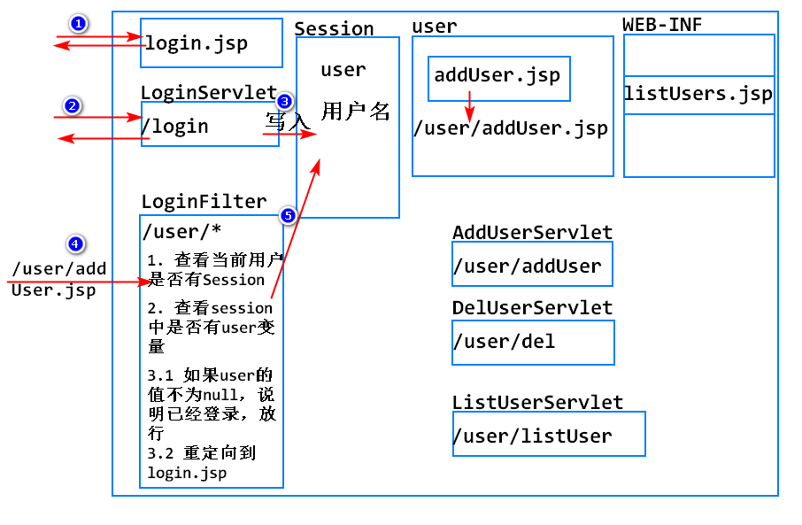
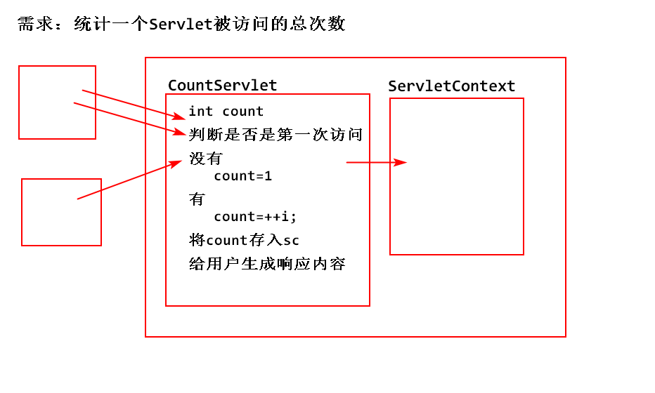
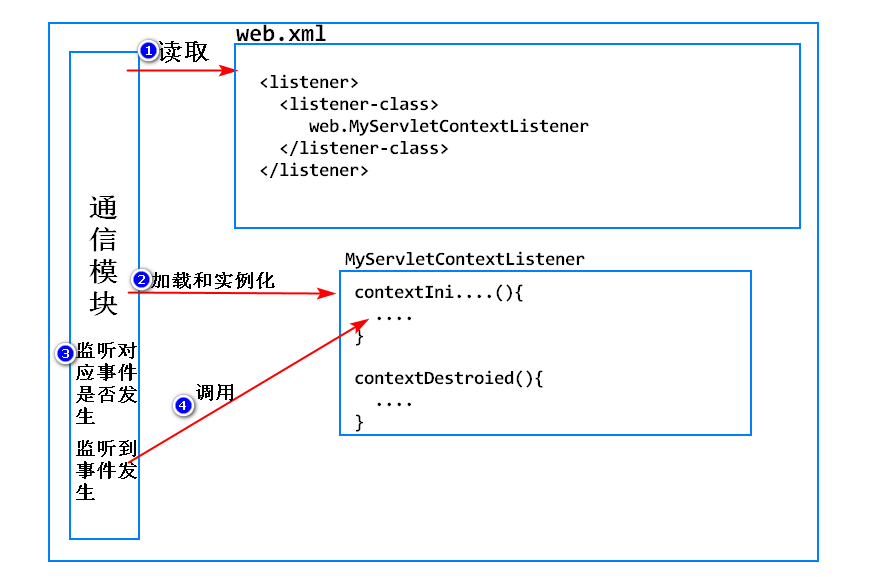

实现添加用户、列出用户、删除用户等功能，必须登录之后才能操作 
<form action="...">
<a href="...">
<img src="...">
<link href="...">
<script src="...">
从一个特定位置到目标文件的路径
写法：
绝对路径的特点：
1. 请求转发
1. request.getRequestDispatcher(url).forward(req,resp)；
2. 该API中传入的url，不需要添加项目映射的路径(context path)
3. 原因是，转发仅能够找到当前项目内部的资源
2. 请求重定向
1. response.sendRedirect(url);
2. 该API中传入的url，必须添加当前项目映射的路径(context path)
3. 该路径是供浏览器使用的，目标没有限制
3. 除转发外，有所的绝对路径中必须包含context path
修改addUser.jsp中的路径，将相对路径改成绝对路径
1. <link ... href="...">
2. <form action="...">
修改WEB-INF下的listUsers.jsp文件中的路径，将相对路径改成绝对路径
1. <link ... href="...">
2. <a herf="...">删除
3. <button ... onclick="...">
总和测试当前项目，如遇到404
开发LoginFilter，拦截 /user/*，在doFilter()中添加拦截的逻辑
API： 1. 获取ServletContext ServletContext sc=getServletContext();
2. 存值/取值
sc.setAttribute(String name,Object value);
sc.getAttribute(String name);
sc.removeAttribute(String name);

1. ServletContext只有一个，不适合保存多个用户不同的变量，因为会彼此覆盖
2. Session可以跨请求保存一个用户的会话状态
3. request可以在一次请求内部实现数据共享
4. 遇到共享数据的需求时，如何考虑？
1. 该数据是大家用同一个，还是每个人不同的？同一个-ServletContext
2. 该数据是否要跨请求共享？ 跨请求 - Session
1. 可以在web.xml中配置一个项目通用的初始化参数
<context-param>
<param-name>encode</param-name>
<param-value>utf-8</param-value>
</context-param>
2. 可以通过ServletContext对象，直接获取该初始化参数
String value=sc.getInitParameter(String name);
3. 优势：
1. 不论Servlet还是Filter,还是JSP，都可以直接访问相同的ServletContext,进而获取 该初始化参数的值
2. 只需要配置一次，就可以实现整个项目的共享
ServletContext -> Servlet的上下文 -> 指的就是服务器(Tomcat) -> 进一步的就是当前Servlet所在的那个项目
指Sun公司提供的JavaEE的监听器，可以监听Web项目在运行中的各种具体事件，执行开发者指定的处理逻辑

1. 特殊对象的创建和销毁
1. Request对象
2. Session对象
3. ServletContext对象
2. 特殊对象中存入了值、修改值、删除值
1. Request对象
2. Session对象
3. ServletContext对象
3. 其他
1. 自定义一个监听器的类，实现对应的监听器接口
2. 实现其中定义的抽象方法，提供具体事件的处理逻辑
3. 在web.xml中进行配置
1. JavaEE的很多组件，其创建和销毁有自己的生命周期，不由开发者控制
2. 开发者有时需要在一个特定的事件发生后，指定自定义的逻辑
3. 由于很多类都不是开发者提供的，开发者无法在类中添加自己的代码
4. JavaEE提供了对应的监听器，监听具体的事件，开发者可以提供监听器的实现类，添加具体事件的处理逻辑
5. 由服务器保证，一旦事件发生，开发者添加的处理逻辑可以被执行
Session
API HttpSession session=request.getSession(boolean flag); true:有则使用，无则创建 false:有责使用，无则返回null request.getSession(); // 与传入true一样的
session.setAttribute(String name,Object value);
session.getAttribute(String name);
session.removeAttribute(String name);
session.getId(); //
Session的销毁
Session和Cookie的区别
Session和request在共享数据上的区别
Filter
如何开发一个Filter？
Filter的生命周期：
4.FilterConfig 1. 代表了一个Filter在web.xml中配置的初始化参数 2. 由服务器创建，读取web.xml中的参数，存入该对象中 3. 服务器在调用一个Fitler的init()方法时，会将config对象传入 4. config.getInitParameter(String name);